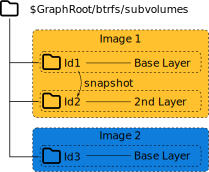

container-snap
Atomic Updates from OCI Images using Podman’s Btrfs Driver

who -u
Dan Čermák
| Software Developer @SUSE | |
| i3 SIG, Package maintainer | |
| Developer Tools, Testing and Documentation, Home Automation | |
| https://dancermak.name | |
| dcermak | |
| @Defolos@mastodon.social |
Atomic Updates
Updates applied fully or not at all
Bootable Containers
deploy an OS from OCI images
But why 🤔
We all know how to build a container
Boot from OCI Images

openSUSE's tukit
podman's btrfs storage driver

container-snap
Demo
Questions?
Answers!